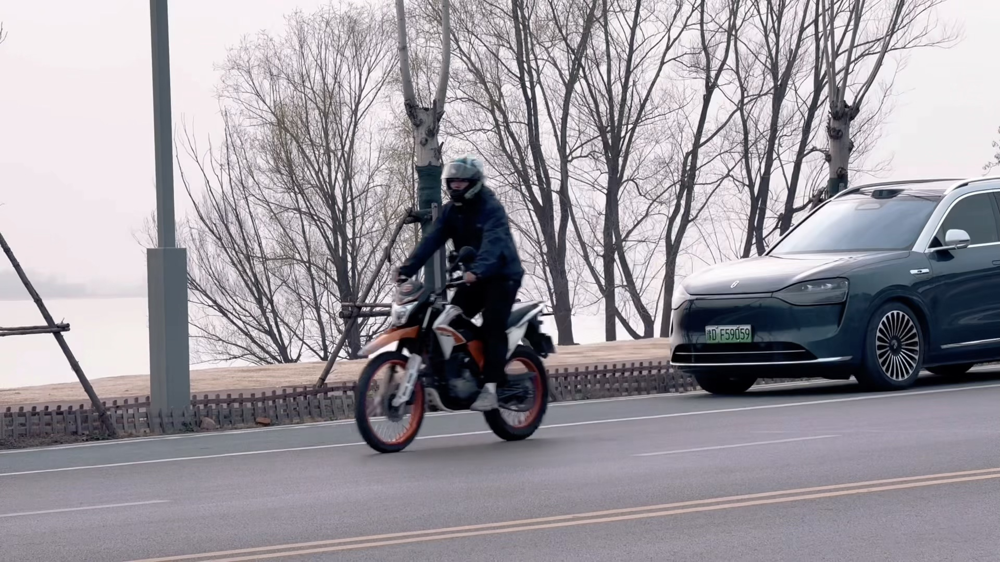

👋 我是 Peter W.，一个热爱技术的开发者。
💼 职业身份：某航空仿真企业软件架构师，主要负责飞行模拟器和战场仿真系统开发。曾参与多项训练支持与仿真系统建设任务。
🚀 个人开发：业余时间持续做 AI 应用、微信小程序和 Web 工具，目前维护热量记录、实时盯盘、AI 股票助手、约球小程序和个人主页等 GitHub 工程。
📍 常驻：上海
某航空仿真企业 | 上海
分系统负责人
软件负责人
GitHub: wangpitao/Log_calories
GitHub: wangpitao/market_monitor
GitHub: wangpitao/ai-stock-agent
GitHub: wangpitao/basketball-together
GitHub: wangpitao/840152212.github.io
算法负责人
Focal and Global Spatial-Temporal Transformer for Skeleton-based Action Recognition
ACCV 2022 (CCF 推荐国际会议) · Oral Presentation
发明专利：基于自注意力机制的人体动作识别网络和电子装置
软件著作权：基于 unity 的虚拟人动作捕捉定制平台 V1.0
郑州大学（211）计算机与人工智能学院
研究方向：基于 Transformer 的 3D 人体动作识别
荣誉：研究生三好学生、一等学业奖学金
郑州大学（211）软件学院
